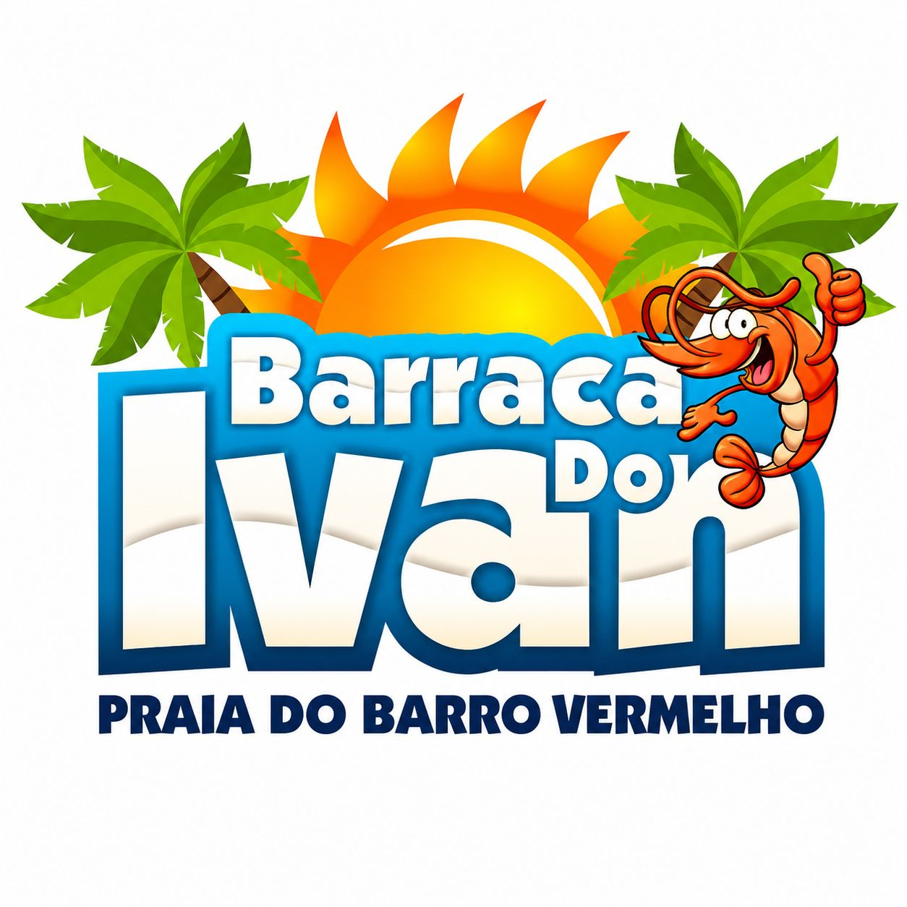
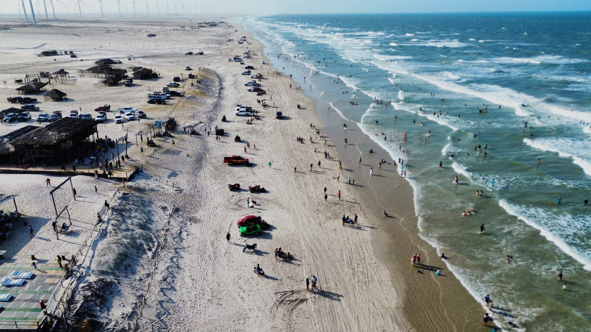
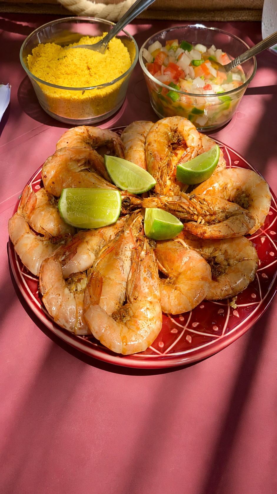
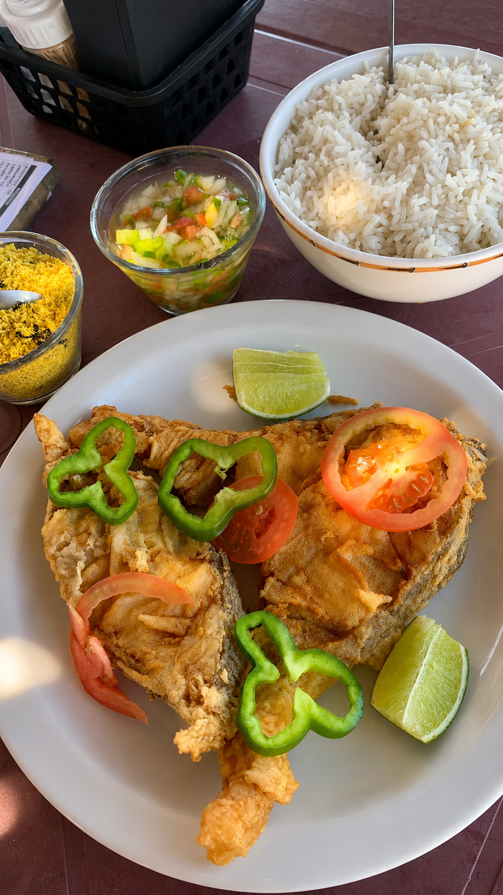
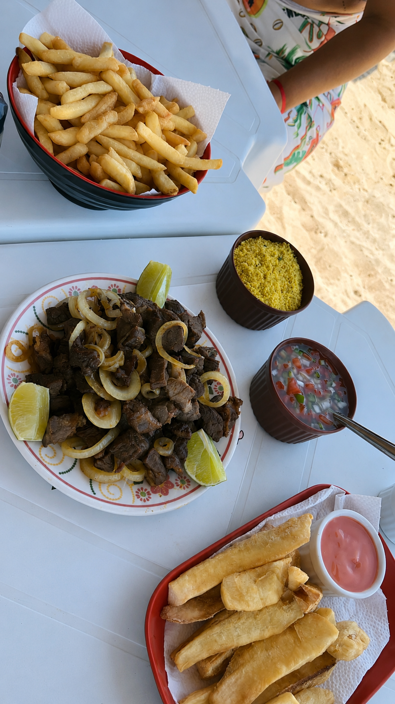

🏖 Praia do Barro Vermelho · Paulino Neves — MA
“O sabor do mar direto para sua mesa”
Quem somos

Localizada na bela Praia do Barro Vermelho, em Paulino Neves – MA, a Barraca do Ivan é o ponto de encontro perfeito para quem busca comida boa e o verdadeiro sabor da culinária maranhense.
Frutos do mar fresquíssimos, petiscos caprichados e refeições fartas para toda a família. Aqui você encontra qualidade, carinho e o calor genuíno do Nordeste.
Somos uma barraca tradicional da Praia do Barro Vermelho, com atendimento carinhoso e pratos que fazem você voltar sempre. Venha nos visitar e sentir o verdadeiro gosto do litoral maranhense!
Localizada próximo a Barreirinhas, Tutóia e aos Lençóis Maranhenses, a Praia do Barro Vermelho é uma parada obrigatória para quem faz roteiro turístico pelo litoral do Maranhão. Restaurante na praia com frutos do mar frescos, bebidas geladas e o melhor da culinária nordestina!
Destino turístico
A Praia do Barro Vermelho é uma das praias mais deslumbrantes do Maranhão. Localizada no município de Paulino Neves, essa praia paradisíaca encanta turistas com suas areias brancas e finas, dunas imponentes, águas calmas e uma natureza praticamente intocada — o verdadeiro litoral selvagem do Nordeste brasileiro.
Areias brancas, dunas douradas e vegetação nativa de restinga. Um dos últimos trechos de praia deserto e preservado do litoral maranhense.
Paulino Neves fica próximo a Barreirinhas — a porta de entrada dos Lençóis Maranhenses. A Praia do Barro Vermelho é uma parada obrigatória no roteiro.
Com a Barraca do Ivan diretamente na praia, você come frutos do mar fresquíssimos com os pés na areia e a brisa do mar. A experiência gastronômica mais autêntica do Maranhão.
Agências de turismo de Barreirinhas e Tutóia incluem a Praia do Barro Vermelho no roteiro de excursões. A Barraca do Ivan é o ponto de parada preferido dos grupos.
Turistas que visitam os Lençóis Maranhenses frequentemente incluem a Praia do Barro Vermelho no roteiro, fazendo de Paulino Neves uma cidade cada vez mais procurada. A região também é rota para quem viaja entre Barreirinhas e Tutóia pelo litoral maranhense.
📍 Ver Praia no Google MapsPara grupos
Planejando uma excursão para a Praia do Barro Vermelho? A Barraca do Ivan oferece atendimento especial para grupos com cardápio customizado, estrutura para grandes quantidades e toda a hospitalidade maranhense!
📞 (11) 96917-0096
Entre em contato para mais informação — ExcursõesAmbiente
 =======
=======



>>>>>>> 98210e985c3fd422e064075da8c0d31709822df5

Veja mais fotos no nosso Instagram:
@barraca.do.ivan
Roteiro turístico
A Praia do Barro Vermelho fica no município de Paulino Neves – MA. Confira as rotas de acesso mais comuns para turistas:
Siga pela MA-402 em direção a Paulino Neves. A estrada passa por dunas e restingas do litoral maranhense. Ao chegar em Paulino Neves, siga em direção à praia. A Barraca do Ivan fica diretamente na orla da Praia do Barro Vermelho.
De Tutóia, siga pela MA-402 em direção a Paulino Neves. Tutóia também é porta de entrada pelo Delta do Parnaíba, e o roteiro Tutóia → Paulino Neves → Barreirinhas é um dos mais bonitos do Nordeste.
De São Luís, siga pela BR-135 até Barreirinhas (aprox. 280 km) e de lá siga para Paulino Neves pela MA-402. Outra opção é voar até Barreirinhas ou pegar vans/transfer turístico.
O roteiro mais completo do litoral norte do Maranhão inclui: São Luís → Barreirinhas → Lençóis Maranhenses → Paulino Neves (Praia do Barro Vermelho) → Tutóia → Delta do Parnaíba. Almoçar na Barraca do Ivan na Praia do Barro Vermelho é uma das melhores paradas do trajeto — frutos do mar na beira da praia, em um cenário paradisíaco!
Onde estamos
Praia do Barro Vermelho
Paulino Neves — MA
Ver no Google Maps →
Dúvidas frequentes
A Barraca do Ivan fica na Praia do Barro Vermelho, em Paulino Neves – Maranhão. É um restaurante à beira-mar, próximo a Barreirinhas, Tutóia e aos Lençóis Maranhenses. Acesse pelo Google Maps →
Sim! A Praia do Barro Vermelho fica próxima a Barreirinhas e é um destino muito procurado por turistas que visitam os Lençóis Maranhenses. É a parada perfeita para almoçar com frutos do mar frescos durante o seu roteiro turístico pelo Maranhão.
Sim! Oferecemos atendimento especial para grupos e excursões com cardápio personalizado e estrutura para grandes quantidades. Entre em contato pelo WhatsApp (11) 96917-0096 para reservas de excursão.
Nosso cardápio inclui frutos do mar frescos: camarão, peixe frito, lagosta, mariscos e carne de sol, além de petiscos variados, bebidas geladas e pratos completos da culinária maranhense. Tudo feito com ingredientes frescos do litoral!
Funcionamos todos os dias, das 9h às 18h. Para pedidos agendados e excursões, entre em contato com antecedência pelo WhatsApp (98) 98812-6176.
Na Praia do Barro Vermelho em Paulino Neves você pode: banhar-se nas águas calmas, passear pelas dunas, fazer trilhas na restinga, comer frutos do mar frescos na Barraca do Ivan, fotografar a paisagem e fazer passeios de buggy pelas dunas. É uma das praias mais bonitas e preservadas do Maranhão!
Sim! Paulino Neves fica na rota entre Tutóia e Barreirinhas, no litoral norte do Maranhão. Quem faz o roteiro do Delta do Parnaíba em Tutóia costuma passar por Paulino Neves e pela Praia do Barro Vermelho a caminho dos Lençóis Maranhenses em Barreirinhas.
Com certeza! Paulino Neves é uma cidade encantadora do Maranhão com a deslumbrante Praia do Barro Vermelho. Próxima a Barreirinhas e aos Lençóis Maranhenses, é um destino ideal para quem busca praia selvagem, natureza preservada e frutos do mar frescos com o verdadeiro sabor nordestino.
Saindo de Barreirinhas, siga pela MA-402 em direção a Paulino Neves. Ao chegar no município, siga em direção à orla da Praia do Barro Vermelho. A Barraca do Ivan fica diretamente na praia, fácil de encontrar. Use o Google Maps com o link disponível neste site para orientação precisa.